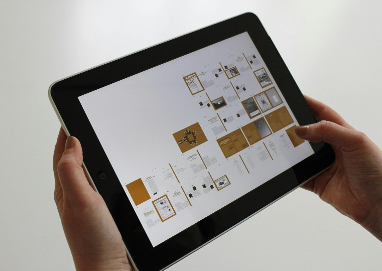

Snakes you say. I will get to that!
So, some of you may have noticed that things have appeared to be a bit quieter than usual around here. Over the last year, at Let’s Do Digital, we have been running quite a few conferences, webinars and training courses, associated with lots of social media pushes regarding said events. Things have “appeared” somewhat quieter for the last 2 months since the October Let’s Talk Digital Conference. Looks can be deceiving. The Let’s Do Digital team have been working hard to deliver even more value to the community. We have been working on a number of courses, webinars and other educational materials for 2025. Before I go into the details of what is planned for next year, let me give you a quick update on the team behind the scenes.
The Team
There is a fantastic team of tutors, course creators and speakers who work hard to deliver high quality content for you in digital healthcare. However, we only have one admin person, me (Mark)! I am both community lead, back office admin, social push manager, web page curator and everything else in between. I even create courses and handbooks! The Let’s Do Digital team have been working hard, but I have had to take a small break from undertaking all of the admin tasks. Unfortunately, my father was diagnosed with terminal cancer a few months back, and I have only just attended his funeral a few days ago. It has been hard, but I am now feeling ready to get back to helping the Let’s Do Digital and wider community to deliver the best content we can. I am really looking forward to jumping straight into 2025 and providing great educational materials!
So, with the above said, a tear shed, and with an ever-burning passion to make digital health practice and education as great as it can be, let’s talk about what is coming up in 2025.
Data Analytics in Medicine Course
We have been working hard on the long awaited Data Analytics in Medicine course. This course is designed to teach you how to use data analytics in a healthcare setting. We have a number of modules planned for this course, and we are looking to deliver the first module in the first quarter of 2025. We will have more details on this course soon, so keep an eye out for updates.
AI Course
Naturally, following on from the machine learning course above, AI is next to be taught. This course is designed to teach you how to use AI in a healthcare setting. We have a number of modules planned for this course, and we are looking forward to deliver these very soon.
Coding for the End User Course

We are building the course to help you better understand how to build better frontends that are designed with the end-user in mind. You will learn the basics of how web pages are built, the code underneath them and how to make them more user friendly.
Programming in Healthcare course - Live and Tutored
We have now delivered 4 modules in the Programming in Healthcare course. We have had some amazing feedback from our 110 students. We are now building the next few modules for this course, and will have further dates coming out soon to deliver the entire course with fresh new modules. This course teaches you how to program in the python programming language for use in healthcare and so very much in keeping with 2025 being the year of the snake!
Programming in Healthcare Course - Self-paced

We already have module 0 of the Programming in Healthcare course available for self-paced learning. We are working on the next modules of this course.
Essentials of Health Informatics Handbook
We have spoken about this over 2024, and have had amazing feedback from you all on what you want to learn about in this new handbook in digital healthcare. This handbook is currently being built in the background, and we have an amazing team of authors already lined up to deliver webinars to support the content in the handbook. This has been a project in the works for over a year now. It is a huge undertaking, but one that is very much needed. The Essentials of Health Informatics handbook is envisioned to be the first point of contact for students new to digital healthcare. The handbook will also be a reference for the seasoned professional.
Conclusion
So as you can see, we have a huge line up of educational material planned to be deliver over 2025. We have a few other webinars and courses that we have up our sleeve as well and we will be announcing these in the coming months. We are also collaborating with like minded organisations, like Mind the Bleep and there are potentially some other big collaboration announcements to come in 2025.
So watch this space, and let’s make 2025 the year of the snake and the year of digital health education!